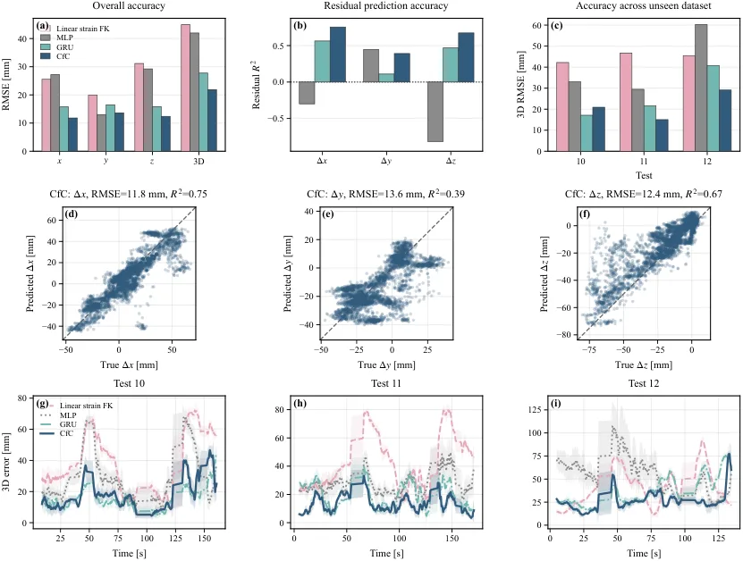

用连续时间网络估计气动扰动下的空中连续体机械臂末端位置
Temporal Learning for End-Effector Position Estimation under Aerodynamic Disturbances in Aerial Continuum Manipulation
把末端位置拆成“低阶应变参数化模型给出的标称量”与“气动扰动引起的残差”，后者交给连续时间网络，三模型对照显示 CfC 在未见实验上把 3D RMSE 从 44.94 mm 降到 22.00 mm。
3D RMSE
error reduction
作者、单位与技术谱系 · Research context
作者与单位
研究脉络
- Renda et al. (2020, RA-L)方法基座关系：应变参数化（variable-strain）静态建模，本文标称运动学的直接来源[arXiv 官方 HTML v1]
- Boyer et al. (2020, T-RO)方法基座关系：连续体与软体机器人的应变参数化动力学框架[arXiv 官方 HTML v1]
- Hasani et al. (2022, Nature Machine Intelligence)方法基座关系：闭式连续时间网络（CfC）的原始方法[arXiv 官方 HTML v1]
- Uthayasooriyan et al. (2026, RA-L)最接近的上游工作关系：同样研究多旋翼下洗对连续体机械臂的影响，但只做稳态残差修正[arXiv 官方 HTML v1]
合作网络
- 第一作者与团队负责人的共同署名N. Amiri（第一作者） → F. Janabi-Sharifi关系：共同署名（团队系列工作）[arXiv 官方 HTML v1]
- 合作作者与第二单位H. Masnavi（University of Freiburg） → 多伦多都会大学团队关系：跨机构合作（论文署名）[arXiv 官方 HTML v1]
- 经费支持关系NSERC 项目 2023-05542 与 NRC 项目 AI4L-128-1 → 本论文关系：资助关系[arXiv 官方 HTML v1]
- 实验测量依赖Vicon 运动捕捉系统（Vicon Motion Systems Ltd., UK） → 末端与无人机质心的 10 Hz 真值关系：明确的硬件依赖[arXiv 官方 HTML v1]
作者、单位、资助与硬件依赖来自论文首页脚注与实验小节；技术接续来自正文引用与参考文献列表。除署名、资助、明确的技术与硬件依赖外，未发现公开证据支持的师生或机构合作关系，相关推断不作补写。
方法本质拆解 · What actually changed
是不是微调？
残差网络全部从头训练：在开发集（Test 1–9）上做三折交叉验证选超参，Adam + MSE，未使用任何预训练权重；标称模型是离线辨识的紧凑物理模型（应变线性基 + 驱动映射共 20 个参数，用 Test 17–21 标定），它作为不可微的基线被加到网络输出上，而不是作为网络内的可微层。
有没有额外约束？
输入被限定为驱动/构型相关量（含关节速率 q̇₁）、悬停高度与转子油门，输出是三维位置残差；损失只有 MSE，没有显式物理约束或正则项；评测协议上还有一条硬约束——Test 13–16（含载荷）在残差建模中被剔除，避免载荷工况污染残差定义。
推理/后端到底做了什么？
推理是轻型序列网络前向（GRU 25 步 / CfC 32 单元、序列 50 步）再加标称前向运动学的结果，没有测试时优化、因子图、EKF 或额外后处理；作者据此强调它是低计算量、可实时部署的方案。
方法本质是什么？
把末端位置误差拆成可解析与不可解析两部分：可建模的弹性/几何响应由低阶应变参数化 Cosserat 模型闭式给出，气动下洗造成的偏差交给连续时间网络在隐藏状态里显式演化；由于只替换残差项而不抬高模型阶数，它在保持紧凑表示的同时显著降低了未见工况的 3D 位置误差。
输入=驱动状态/速率、悬停高度与转子油门；改变的位置=标称运动学之外的 3D 位置残差；动作=线性应变基标称模型 + CfC 连续时间残差网络；效果=未见航次 3D RMSE 从 44.94 mm 降到 22.00 mm（5 种子）。

桥接价值Bridge
桥接价值
这是一篇把“模型该多复杂、残差该用什么结构、哪些输入真的有信息量”三问都给出定量答案的小规模实验研究。它先证明常数曲率（等效常数应变）假设严重不足（分箱 x–z RMSE 94.72 mm），线性应变基就把误差降到 13.84 mm（降 85.4%），而二次与三次只再降到约 13.03 mm——“低阶基足够”这一结论对我们在 PPP/INS 误差建模中选择状态维度与先验阶数有直接参考价值。随后它把气动残差交给 CfC，用 MLP/GRU 作对照，得到连续时间结构在未见航次上最优、且跨 5 个种子方差最小的结论。
方法与模块Method
方法摘要
标称部分用应变参数化 Cosserat 杆前向运动学：构型 g(s) ∈ SE(3) 由应变向量 ξ(s)=ξ*+B_m(s/L)q_s 积分得到，作者分别用常数、线性、二次、三次基比较精度，并用纯数据驱动三阶多项式 FK 作对照。数据由 Vicon 以 10 Hz 同时测末端与无人机质心，记录油门与两个腱驱动伺服编码器；完整数据集 28,411 样本（10,538 基线 + 17,873 无人机运行），残差建模使用 Test 1–12 域滤波后的 13,922 个自由悬停样本，按实验划分：Test 1–9 为开发集，Test 10–12 为未见集，Test 17–21 仅用于标称模型标定。网络侧 MLP 为两层 64 ReLU，GRU 与 CfC 各 32 个循环单元、交叉验证选中序列长度分别为 25 与 50，Adam + MSE，均从零训练。
可迁移模块
① “低阶物理基 + 学习残差”的分工方式，以及“先按阶数扫描确定紧凑标称模型再学残差”的流程，可直接搬到 GNSS/INS 的误差状态建模；② 输入消融的做法值得照抄——逐个去掉驱动速率、高度、油门，看到 +11.34%、+18.89%、−2.05% 的差异，从而避免把无信息量测塞进网络输入；③ 按实验（航次）而非按样本划分开发/未见集，并在 5 个随机种子上报告均值±标准差，是可复现评测的标准做法；④ 用 10 Hz 动捕做地面真值、以“慢速驱动使惯性可忽略（准静力学）”简化问题的实验设计，对我们在受控条件下做状态估计验证有借鉴意义。

证据Evidence
关键证据与数字
① 标称模型：常数应变基分箱 x–z RMSE 94.72 mm → 线性基 13.84 mm（降 85.4%），二次/三次仅再降到约 13.03 mm；在线性基上，完整基线集 3D RMSE 25.19 mm 与三阶多项式 24.87 mm 相当，但参数 20 个对 30 个。② 气动残差整体 3D RMS 44.05 mm，且分量以 z 向最大，与旋翼下洗方向一致。③ 未见集 5 种子（表 II）：CfC 22.00±1.70 mm（改善 51.04±3.78%）、GRU 27.72±2.92 mm（38.32±6.50%）、MLP 36.38±3.58 mm（19.04±7.98%），标称线性应变 FK 为 44.94 mm；CfC 在 x 向 11.92±0.85 mm、z 向 11.72±0.39 mm 最优，且 5 次运行 3D 误差均为最低。④ 输入消融（表 I）：去掉 q̇₁ 使 CfC 3D RMSE 升至 32.97 mm（+11.34%），去掉高度升至 35.21 mm（+18.89%，y 向 18.27→28.00 mm），去掉油门反而降到 29.01 mm（−2.05%）。⑤ 单次实验层面：Test 12（近地、侧向偏差大）对三个学习器都最难，Test 10 上 GRU 略优于 CfC。
边界与下一步Limits & Next Step
边界与风险
作者明确承认与展示的边界有四条：① 油门信号信息量低，原因是无人机受载荷余量限制、实验中油门范围很窄，属平台限制而非方法结论；② CfC 并非在每一个工况都优于 GRU（Test 10 上 GRU 更低），优势体现在整组未见集的均值与稳定性；③ 实验只覆盖单平台、单一软件连续体、4 个悬停高度与 12 个自由悬停航次，数据规模有限；④ 未来工作才扩展到更激进机动与随机气动条件，即当前未验证大机动与大扰动下的外推能力。我们的待核验项：论文未报告在闭环控制中接入该残差估计器后的跟踪误差变化，也未报告推力/高度以外的环境量（风、地效距离）对残差的贡献；Vicon 场地单一，“准静力学”假设在快速运动下会失效。
下一步实验
① 把“低阶物理基 + 时序残差网络”照搬到我们的 PPP/INS 残差建模，先做一次“常数 vs 线性 vs 二次”基阶数对照，确认紧凑模型的收益；② 复现其“按实验划分 + 5 种子报告方差”的评测协议，替换我们常见的随机样本划分；③ 补做它没做的闭环验证：把残差估计接入控制器，观察跟踪误差与力矩变化；④ 在引入风扰或更激进机动的条件下测试 CfC 的外推边界，判断连续时间结构的收益是否随扰动强度单调保持。